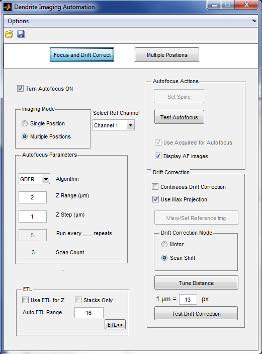
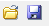
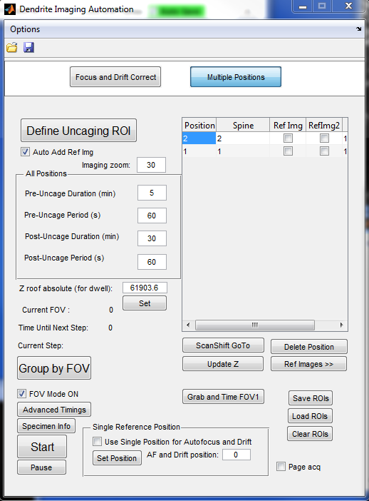

Main Window (Dendrite Imaging Automation)

Options
- Save/Load window positions
- Allows you to save or load the positions of all currently open windows. Saved positions will be restored when Scanimage opens if the appropriate setting is turned on in mdia_settings.m
Toolbar
-  Open/Save icons
- Loads or saves the current DIA settings
Focus and Drift Correct (Tab)
- Turn Autofocus On
- Toggles whether autofocus is used during imaging
- Imaging Mode
- Toggle whether autofocus is being used for imaging a single position or multiple positions
- Select Ref Channel
- Imaging channel used to collect images used for Autofocus and Drift Correction
- Autofocus Parameters
- Algorithm
- The algorithm used to find the best focus value in the image. GDER (Gaussian derivative) is recommended. Check AF\fmeasure\operators.txt for more info on other operators.
- Z Range (µm)
- Range used during exclusive autofocus. If "Use Acquired for Autofocus" is on, exclusive autofocus is not used during automated imaging.
- Z Step (µm)
- Step size between slices collected for exclusive autofocus. If "Use Acquired for Autofocus" is on, exclusive autofocus is not used during automated imaging.
- Run every __ repeats
- How often the exclusive autofocus runs during LOOP repeats. This only applies to Single Position Imaging where the normally aquired image is not being used for autofocus.
- Scan Count
- calculated amount of scans which will be performed if an exclusive autofocus routine runs. If "Use Acquired for Autofocus" is on, exclusive autofocus is not used during automated imaging.
- ETL
- This refers to an Electrically Tunable Lens. Your system most likely does not have this feature. Additional info to be added later.
- Autofocus Actions
- Set Spine
- If running in Single Position mode, use this button to select the area of interest in the image which will be used for autofocus. If no spine is set, the entire image will be used.
- Test Autofocus
- Runs exclusive autofocus once in the current position.
- Use Acquired for Autofocus
- Images acquired during regular imaging will be used to find the best focus value. If multiple positions are being imaged, this setting must be on.
- Display AF images
- Each time Autofocus runs, the result is displayed in a new window.
- Drift Correction
- Continuous Drift Correction
- Toggle whether positions will be drift-corrected automatically during imaging.
- Use Max Projection
- Drift Correction is calculated based on the Maximum Projection image as opposed to just one slice. Turning this on will produce more reliable results, especially with 3D specimens.
- View/Set Reference Img
- If imaging only one position, use this button to set (and later View) a reference image which will be used to calculate and compensate for drift later on
- Drift Correction Mode
- Toggle whether the motor or a shift in laser scanning is used to compensate for drift. Scan Shift mode is quicker and is recommended over Motor.
- Tune Distance
- This is only necessary if using a motor for drift correction. Additional Info to be added later.
- Test Drift Correction
- This is only necessary if using a motor for drift correction. Additional Info to be added later.
Multiple Positions (Tab)

- Define Uncaging ROI
- This is the primary method to add a new position which will be imaged. Click this button and draw an uncaging ROI on the image. The coordinates of the position and ROI will be saved.
- Auto Add Ref Img
- If turned on (recommended), a reference image (used for Drift Correction) will automatically be added once an Uncaging ROI is defined.
- Imaging Zoom
- The Zoom value at which imaging will occur. Uncaging ROIs must be set at this same zoom level.
- All Positions
- Pre-Uncage Duration
- The minimum amount of minutes each position will be imaged before uncaging occurs
- Pre-Uncage Period
- The amount of time, in seconds, between rounds of imaging before all positions are uncaged.
- Post-Uncage Duration
- The minimum amount of minutes each position will be imaged after uncaging occurs
- Post-Uncage Period
- The amount of time, in seconds, between rounds of imaging after all positions are uncaged.
- Z roof absolute (for dwell)
- The absolute Z position of the top of the slice, used to calculate the dwell, in ms, for each uncaging position. To set the position, navigate your motor to the top of the slice and hit "Set"
- Advanced Timings
- Brings up the Advanced Timings window
- Start
- Starts Automated Imaging.
- Pause
- After Start is hit, this pauses the automated imaging cycle. This is useful if you'd like to manually update a position. Note: imaging will only pause once a round of imaging is complete (all positions are imaged). Pausing will not work during uncaging.
- Motor GoTo / ScanShift GoTo
- Moves to the selected position. Motor GoTo moves the XYZ motor, while ScanShift GoTo uses the Z motor and Scan Angle Shift ONLY.
- Update XYZ / Update Z
- Updates the coordinates of the selected position to the current coordinates. Update XYZ updates the XYZ motor coordinates, while Update Z updates both the Z motor and Scan Angle Shift coordinates.
- Delete Position
- Removes the selected position from the list. CAN NOT BE DONE ONCE MULTIPOSITION IMAGING HAS STARTED.
- Ref Images >>
- Opens the Drift Correction Options for Multiposition Images window.
- Grab and Time FOV1
- Test one round of imaging all positions. The time it took to image all positions will be shown in the command window.
- Save ROIs
- Save the positions and their reference images.
- Load ROIs
- Load the positions and their reference images.
- Clear ROIs
- Clear all positions and their reference images.
- Single Reference Position
- If you don't want to image multiple Z slices for all images, you can select only one position which will be used for autofocus and drift correction. The amount of slices imaged here are defined in Autofocus Parameters, while the rest of the positions will be images as normal. The drift and autofocus info gathered from the position selected here will be used to shift all the other positions as well.
- Page acq
- Use the Instead of a regular uncaging cycle, use the Page Acquisition option during uncaging.
- FOV Mode ON
- Turns on FOV mode. This should be disabled when initially adding positions. Once it is selected, Shift Fast and Shift Slow values will be used instead of X and Y motor coordinates.
- Group by FOV
- Opens up the Group By FOV window. Requires FOV mode to be turned on.
Created with the Personal Edition of HelpNDoc: Free CHM Help documentation generator